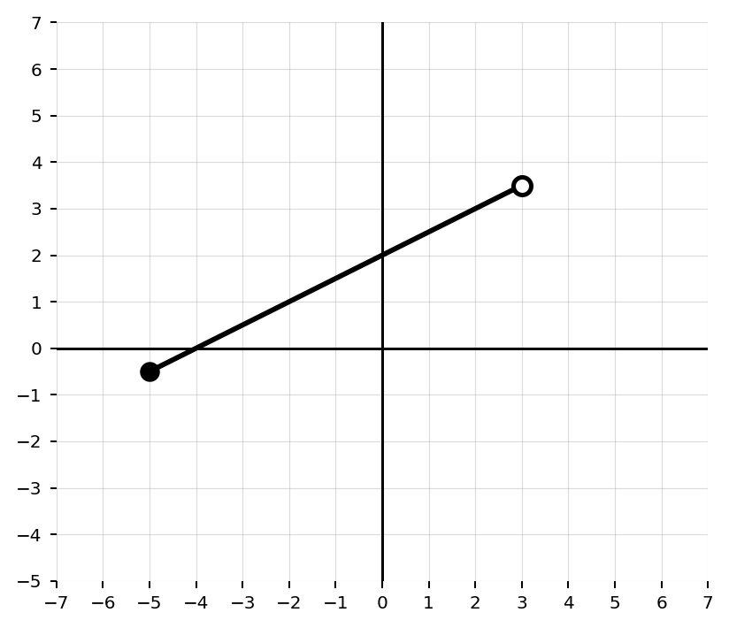
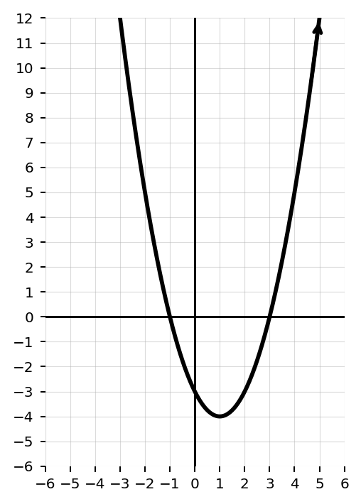
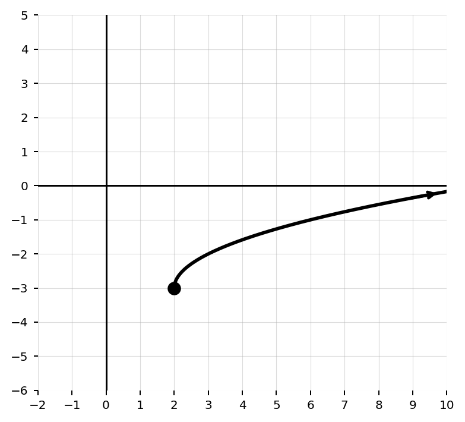
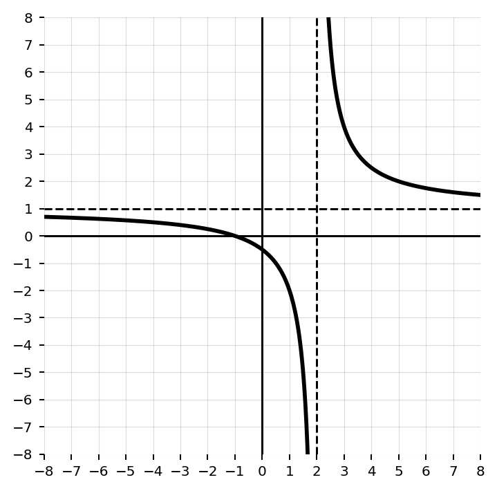
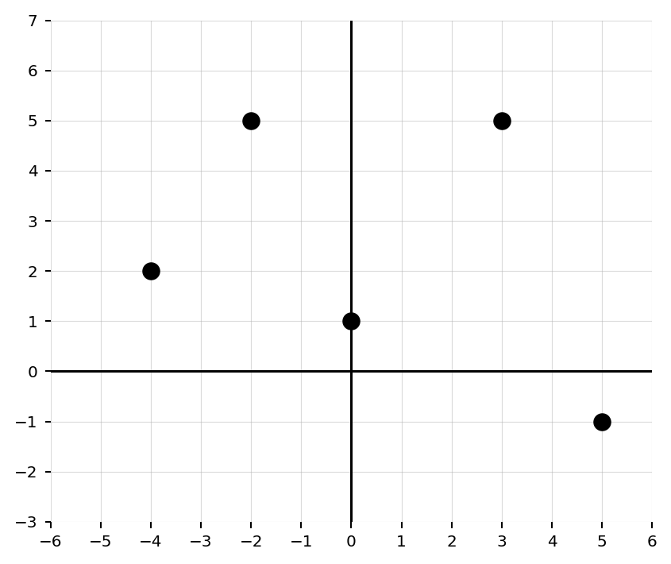
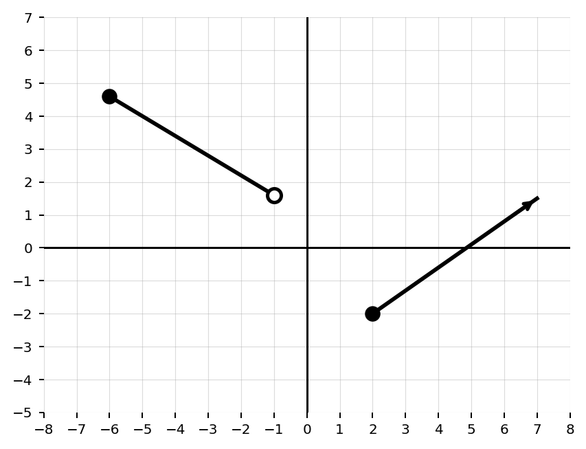

Investigation: Where can the graph live?
Time: 15-20 minutes
Format: Partner investigation, graph-shadow reasoning, equation restriction lab, and whole-class discussion
Today you will discover how domain and range can be seen from a graph and explained from an equation.
\[\text{Domain: possible inputs} \qquad \text{Range: possible outputs}\]
Instead of memorizing rules first, you will look for patterns: endpoints, arrows, holes, square roots, and denominators all give clues.
For each graph, imagine shining a light straight down to the x-axis. The shadow on the x-axis is the domain. Then imagine shining a light sideways to the y-axis. The shadow on the y-axis is the range.

Domain: ____________________
Range: ____________________

Domain: ____________________
Range: ____________________

Domain: ____________________
Range: ____________________

Domain: ____________________
Range: ____________________
For each equation, test the suggested x-values. Then decide which x-values are allowed and write the domain in interval notation.
| Function | Test Values | What goes wrong? | Domain |
|---|---|---|---|
| \(f(x)=x^2-4\) | \(-2,0,3\) | ||
| \(g(x)=\sqrt{x-3}\) | \(2,3,4\) | ||
| \(h(x)=\sqrt{6-x}\) | \(5,6,7\) | ||
| \(p(x)=\dfrac{1}{x+2}\) | \(-3,-2,-1\) | ||
| \(q(x)=\dfrac{x+1}{x^2-9}\) | \(-3,0,3\) |
Match each function or graph description to the reason its domain or range is restricted.
| Function or Graph | Restriction Reason | Domain or Range |
|---|---|---|
| \(y=\sqrt{x+4}\) | ||
| \(y=\dfrac{5}{x-1}\) | ||
| A line segment from a closed point at \(x=-2\) to an open point at \(x=6\) | ||
| An upward-opening parabola with vertex \((3,-5)\) | ||
| A discrete relation with five plotted points |

Domain: ____________________
Range: ____________________

Domain: ____________________
Range: ____________________
This investigation helps students discover that domain is the set of possible input values and range is the set of possible output values. Students first reason graphically using shadows on the axes, then explain algebraic restrictions caused by square roots and denominators.
Say: “Today we are asking where a function is allowed to live. Domain is where the graph lives left to right. Range is where the graph lives bottom to top.”
Teacher move: Project Graph A and physically trace the x-values touched by the graph, then the y-values touched by the graph.
Final summary: Domain is the set of allowed inputs. Range is the set of possible outputs. Graphs show domain through horizontal coverage and range through vertical coverage. Equations may restrict domain when square roots require nonnegative radicands or rational functions require nonzero denominators.
Closure prompt: “Which is more useful for finding domain: a graph or an equation? Give one example where each is useful.”
Graph A Question: Write the domain and range of the segment.
Answer: Domain \([-5,3)\). Range \([-\frac{1}{2},\frac{7}{2})\). The left endpoint is closed and the right endpoint is open.
Graph B Question: Write the domain and range of the parabola.
Answer: Domain \(( -\infty,\infty )\). Range \([-4,\infty)\). The arrows show the parabola continues upward forever, and the vertex gives the minimum output.
Graph C Question: Write the domain and range of the square root shape.
Answer: Domain \([2,\infty)\). Range \([-3,\infty)\). The graph starts at \((2,-3)\) and continues right/up.
Graph D Question: Write the domain and range of the rational shape.
Answer: Domain \(( -\infty,2 )\cup( 2,\infty )\). Range \(( -\infty,1 )\cup( 1,\infty )\). The vertical asymptote excludes \(x=2\), and the horizontal asymptote means \(y=1\) is not reached.
Question: Determine the domain of \(f(x)=x^2-4\).
Answer: \(( -\infty,\infty )\). A polynomial has no real-number input restriction.
Question: Determine the domain of \(g(x)=\sqrt{x-3}\).
Answer: \([3,\infty)\). The radicand must satisfy \(x-3\ge0\).
Question: Determine the domain of \(h(x)=\sqrt{6-x}\).
Answer: \(( -\infty,6]\). The radicand must satisfy \(6-x\ge0\), so \(x\le6\).
Question: Determine the domain of \(p(x)=\dfrac{1}{x+2}\).
Answer: \(( -\infty,-2 )\cup( -2,\infty )\). The denominator cannot equal zero, so \(x\ne -2\).
Question: Determine the domain of \(q(x)=\dfrac{x+1}{x^2-9}\).
Answer: \(( -\infty,-3 )\cup( -3,3 )\cup( 3,\infty )\). The denominator cannot equal zero, so \(x\ne -3,3\).
Question: \(y=\sqrt{x+4}\)
Answer: Square root restriction. Domain \([-4,\infty)\).
Question: \(y=\dfrac{5}{x-1}\)
Answer: Denominator restriction. Domain \(( -\infty,1 )\cup( 1,\infty )\).
Question: Segment from closed \(x=-2\) to open \(x=6\)
Answer: Endpoint restriction. Domain \([-2,6)\).
Question: Upward-opening parabola with vertex \((3,-5)\)
Answer: Range restriction from minimum value. Domain \(( -\infty,\infty )\), range \([-5,\infty)\).
Question: Discrete relation with five plotted points
Answer: Only listed inputs and outputs are included. Domain and range are written as finite sets.
Graph E Answer: Domain \(\{-4,-2,0,3,5\}\). Range \(\{-1,1,2,5\}\).
Graph F Answer: Domain \([-6,-1)\cup[2,\infty)\). Range \([-2,\infty)\). The open point at \((-1,1.6)\) excludes \(x=-1\), and the ray continues upward/right.